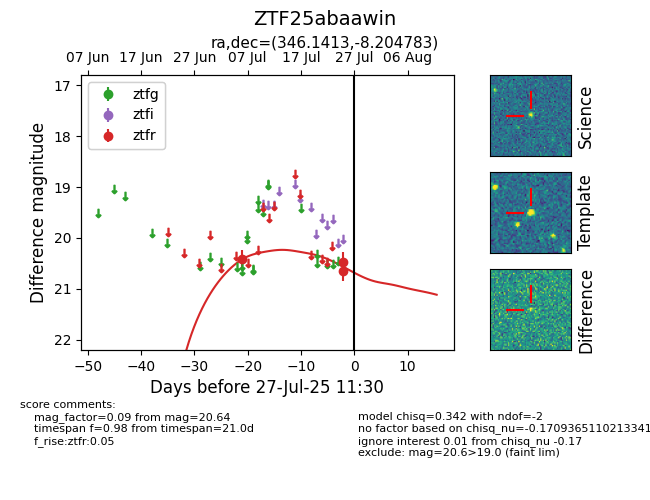

Target ZTF25abaawin at 2025-07-27 11:30, see:
FINK: fink-portal.org/ZTF25abaawin
Lasair: lasair-ztf.lsst.ac.uk/objects/ZTF25abaawin
ALeRCE: alerce.online/object/ZTF25abaawin
alt names
ZTF25abaawin (ztf,fink)
coordinates:
equatorial (ra, dec) = (346.1413,-8.20478)
galactic (l, b) = (64.7510,-58.41896)
photometry
last ztfr=20.64
3 ztfr detections
